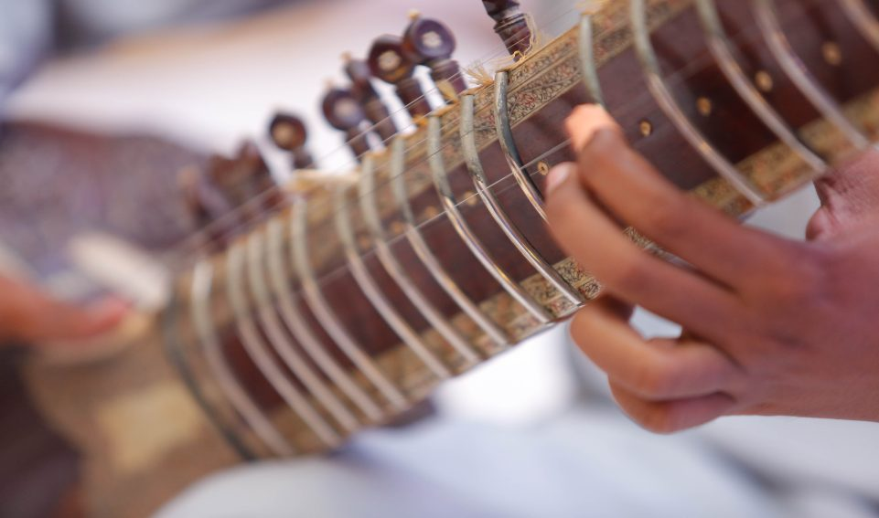

National Tourism E-portal Salam Pakistan
|+92-51-9204027
|24/7 Tourism Helpline: 1422
|info@tourism.gov.pk

National Tourism E-portal Salam Pakistan
|+92-51-9204027
|24/7 Tourism Helpline: 1422
|info@tourism.gov.pk
Islamabad, the capital city of pakistan is ranked as one of the most beautiful cities in the world.
Punjab is Pakistan's second largest province by area, and it is the most populated province, with rich culture & hitory.
Sindh is in the southeast of the country, and the historical home of the Sindhi people. Sindh has Pakistan's second largest economy, while its provincial capital, Karachi is Pakistan's largest city and financial hub.
Located in the northwestern region of the country along the international border with Afghanistan.
It is the largest province in terms of land area, forming the southwestern region of the country, but is the least populated. Its provincial capital and largest city is Quetta.
Azad Kashmir is an administrative region of Pakistan situated in the northern part of the country. The northern part of Azad Jammu and Kashmir encompasses the lower part of the Himalayas, including Jamgarh Peak (15,531 feet [4,734 meters]).
Gilgit-Baltistan is an admisitrative unit of Pakistan situated in the Northern Part of the country. It is one of the best tourist spots in Pakistan. Gilgit-Baltistan is home to five of the "eight-thousanders" and to more than fifty peaks above 7,000 metres (23,000 ft). Gilgit and Skardu are the two main hubs for expeditions to those mountains.
Pakistan is home to 108 peaks above 7,000 metres and probably as many peaks above 6,000 m. There is no count of the peaks above 5,000 and 4,000 m. Five of the 14 highest independent peaks in the world (the eight-thousanders) are in Pakistan (four of which lie in the surroundings of Concordia; the confluence of Baltoro Glacier and Godwin Austen Glacier).
K2, also known as Mount Godwin-Austen or Chhogori, at 8,611 metres (28,251 ft) above sea level, is the second highest mountain in the world, after Mount Everest at 8,848 metres (29,029 ft). It is located on the China–Pakistan border between Baltistan in the Gilgit-Baltistan region of northern Pakistan, and the Taxkorgan Tajik Autonomous County of Xinjiang, China. K2 is the highest point of the Karakoram range and the highest point in both Pakistan and Xinjiang.
Broad Peak is the 12th highest mountain in the world at 8,047 metres (26,401 ft) above sea level. The literal translation of "Broad Peak" to Falchan Kangri is not used among the Balti people. The English name was introduced in 1892 by the British explorer, Martin Conway, in reference to the similarly named Breithorn in the Alps.
Gasherbrum I surveyed as K5 and also known as Hidden Peak, is the 11th highest mountain in the world at 8,080 metres (26,510 ft) above sea level. It is located on the Pakistan–Chinese border and Xinjiang region of China. Gasherbrum I is part of the Gasherbrum massif, located in the Karakoram region of the Himalayas. Gasherbrum is often claimed to mean "Shining Wall", presumably a reference to the highly visible face of the neighboring peak Gasherbrum IV; but in fact it comes from "rgasha" (beautiful) + "brum" (mountain) in Balti, hence it actually means "beautiful mountain."
Gasherbrum II surveyed as K4, is the 13th highest mountain in the world at 8,035 metres (26,362 ft) above sea level. It is the third-highest peak of the Gasherbrum massif, and is located in the Karakoram, on the border between Gilgit–Baltistan, Pakistan, and Xinjiang, China. The mountain was first climbed on July 7, 1956, by an Austrian expedition which included Fritz Moravec, Josef Larch, and Hans Willenpart.
Nanga Parbat locally known as Diamer, is the ninth highest mountain in the world at 8,126 metres (26,660 ft) above sea level. Located in the Diamer District of Pakistan’s Gilgit Baltistan region, Nanga Parbat is the western anchor of the Himalayas. The name Nanga Parbat is derived from the Sanskrit words, nagna and parvata which together mean "Naked Mountain". The mountain is locally known by its Tibetan name Diamer or Deo Mir, meaning "huge mountain".
Pakistani National Cuisine is the inheritor of Muslim Culinary Traditions and known for having aromatic and sometimes spicy flavors. Pakistani Cuisine is divided into a wider range of regional cuisine. i.e. Punjabi Cuisine, Sindhi Cuisine, Pashtun Cuisine, Balochi Cuisine, Hunza Diet, Kashmiri Cuisine and Balti Food.
The devotional form of music most commonly founded in the Sufi Culture in South Asia. Sufi Music originated from the inspirational work of Sufi Poets like Rumi, Bulleh Shah and others. Distinct musical styles, singing and ceremonies have emerged over time, often unique to the local culture, but all unified under the purpose of creating an altered state of spiritual awareness.
Read More >>